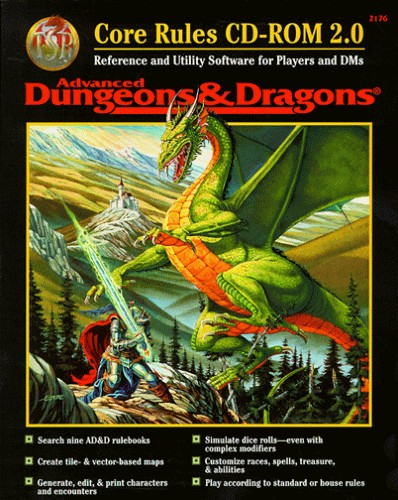
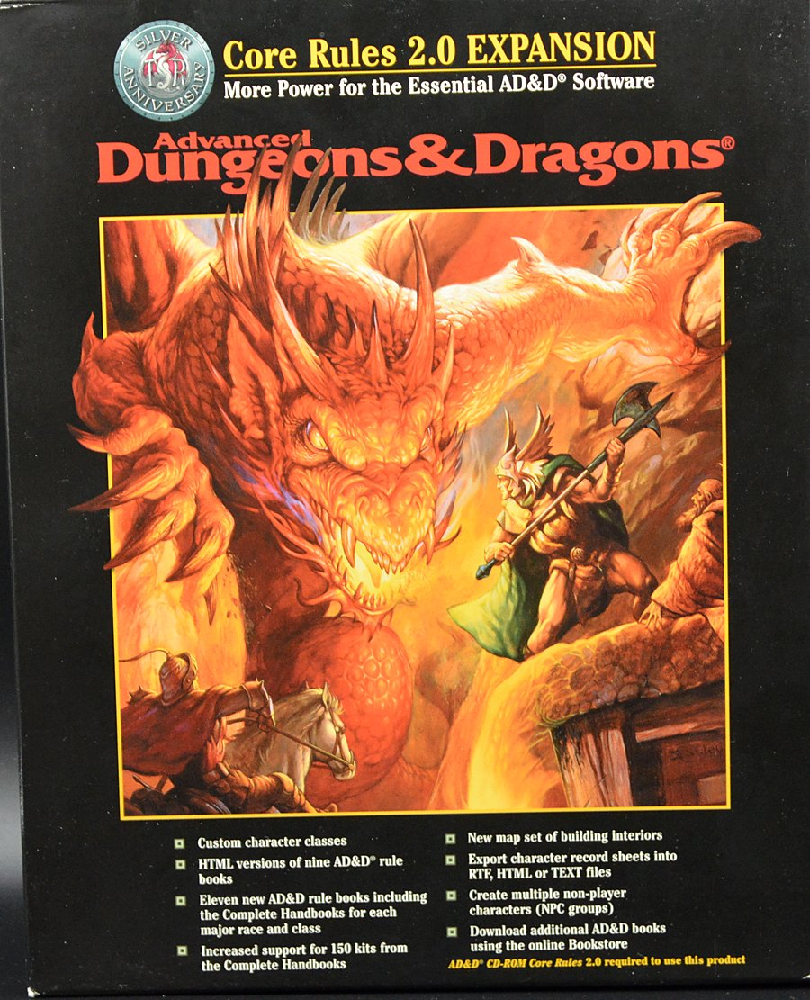
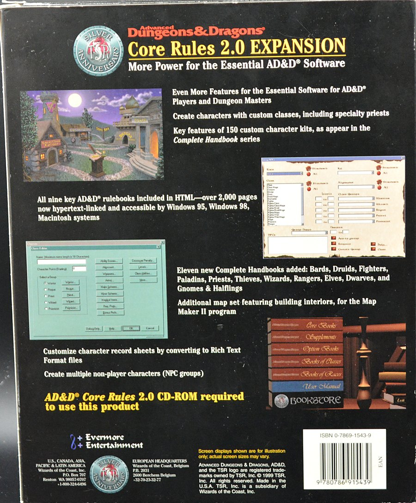
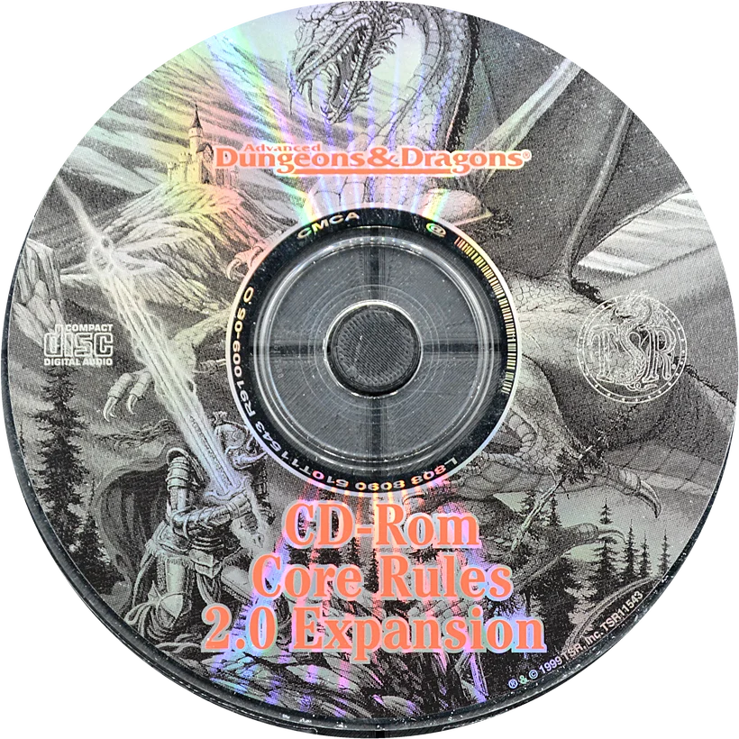
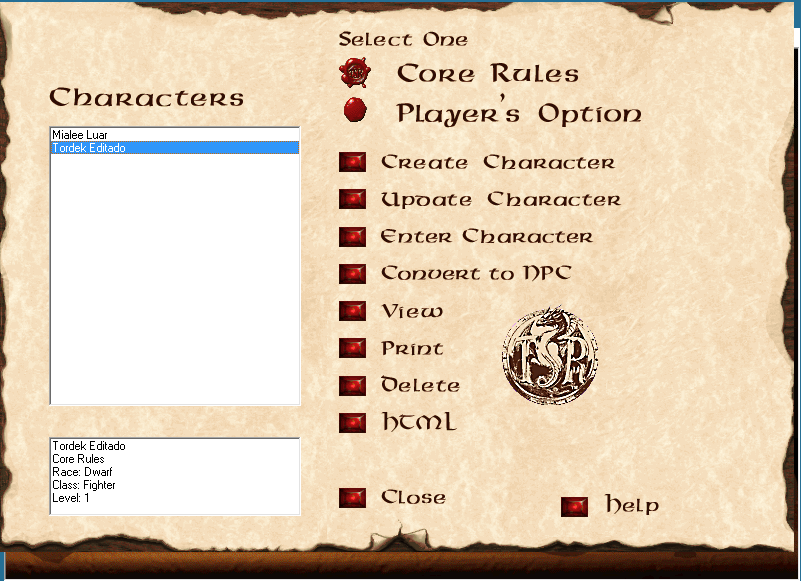
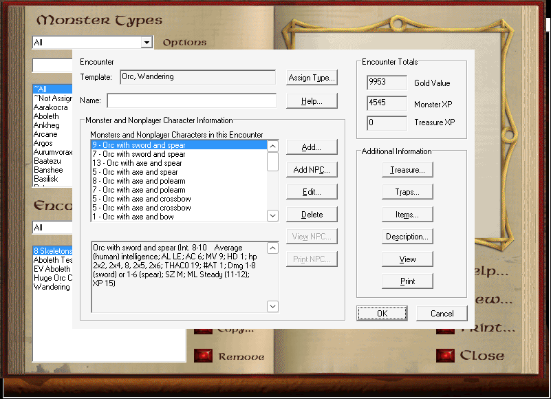
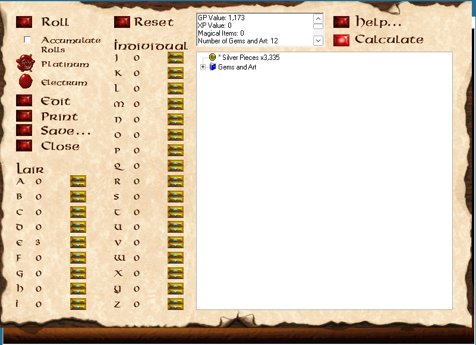

Character Generator
New Character, Enter Character and Update Character, with races, subraces, kits, proficiencies, rogue skills, psionics, spells learned as the rules learn them, and starting equipment.
Advanced Dungeons & Dragons · 2nd Edition
The character manager and Dungeon Master's toolkit of 1998,
dusted off and brought back to the table.
Version 1.1.0 · ready on Linux, Windows 11 and macOS
Free and open source · Requires your original AD&D Core Rules discs
Knight at the Crossroads, Viktor Vasnetsov, 1882
A tale from the dragon's hoard
In 1998, a box arrived with a CD inside and a promise on the cover: every rule of Advanced Dungeons & Dragons in one program. AD&D Core Rules 2.0, and a year later its Expansion, rolled our characters, filled the sheets, built encounters, counted treasure and kept the books a click away. For a whole generation of players it was the closest thing to magic a beige PC could do.
Then the years passed. Windows changed, the installer stopped working, and the discs went to a shelf.
Not long ago I wanted to play AD&D again with my friends. We had grown used to the comforts that D&D Beyond gives the fifth edition: characters made in minutes, sheets that do the math, everything in one place. Second edition deserved the same. And I already owned the original discs of Core Rules 2.0 and the Expansion. I just couldn't use them.
So, with Claude's help, I decided to port it to our times. Not a new program that merely remembers the old one, but the same program: every screen, every table, every roll, reading and writing the very files the original wrote, so a character made in 1999 opens today and a character made today opens in 1999.

AD&D Core Rules 2.0 (1998) and its Expansion (1999), the original Windows programs by TSR and Evermore Entertainment. You still need them: the app reads its rules, monsters and books from your own discs.




The boxes and disc of the original application. Their artwork belongs to its copyright holders.
The adventure, today
Written in Rust, Core Rules runs natively on Linux with GTK 4 and libadwaita, with no Wine, and on Windows 11 with WinUI 3. It has the Character Generator with Create, Enter and Update Character, kits and Player's Option, the character sheet, parties, the NPC, treasure and encounter generators, Table Rolls, editors for every user database, DM Toolkit packages, the rule books and the help.


The Windows 11 version has every screen of the Linux one, over the same backend and the same files, with the look of a Windows 11 app: the navigation pane, command bars, settings cards, the light, dark and high-contrast themes and the Mica backdrop. The help files of the discs open in the app's own Help page, since Windows 11 no longer reads them. It comes from the Microsoft Store, free, signed and kept up to date by the Store.


Then & now
The flow of every screen follows the original: the same choices, in the same order, giving the same results. On the left, the original program of 1998–1999, captured under Wine for comparison; on the right, the same task in Core Rules.



Screenshots of the original AD&D Core Rules 2.0 and Expansion programs are shown only to compare the two; the original program, its interface and artwork belong to their copyright holders.
What's in the tome
New Character, Enter Character and Update Character, with races, subraces, kits, proficiencies, rogue skills, psionics, spells learned as the rules learn them, and starting equipment.
NPC, treasure and encounter generators, encounter templates and frequency tables, traps, Table Rolls, and packages to share with other DMs.
Races, classes, kits, items, spells, psionic powers and monsters, with their pictures and icons, and the Core Rules books in a reader with search.
Characters, monsters, encounters and packages made in either program open in the other. Results were compared with files the original wrote.
English, Português (Brasil), Español, Italiano, Français and Deutsch.
.deb for Ubuntu, .rpm for Fedora, pacman for Arch, CachyOS and Omarchy, a Flatpak and an AppImage for Bazzite and every other distribution, the Microsoft Store for Windows 11, and a native app for Apple Silicon Macs.
Ready the horses
Version 1.1.0, for Linux, Windows 11 and macOS
Pick the file for your system; each link downloads it directly. The Linux files are for x86-64; Windows 11 comes from the Microsoft Store, and the Mac file is for Apple Silicon.
sudo apt install ./corerules_1.1.0_amd64.debsudo dnf install ./corerules-1.1.0-1.fc44.x86_64.rpmsudo pacman -U ./corerules-1.1.0-1-x86_64.pkg.tar.zstflatpak install --user https://brahm.github.io/corerules/io.github.brahm.CoreRules.flatpakrefchmod +x CoreRules-1.1.0-x86_64.AppImageTested by players on Fedora 45 beta · Ubuntu 26.10 · Bazzite · Arch Linux · CachyOS · Windows 11 · macOS
The Mac app is signed without a certificate from Apple and is not notarized, because the project has no Apple developer account. So the first time you open it, macOS refuses it and says it could not check it for malicious software. After copying it to Applications, run this once in Terminal, and from then on it opens like any other app:
xattr -dr com.apple.quarantine "/Applications/Core Rules.app"
Or, without Terminal, the Open Anyway steps:
Some Macs do not offer Open Anyway, and a Mac managed by a company or school may not allow the app at all. You need to do this again after each update. Macs have no CD drive, so File › Extract Data from CD… copies the rules data from the CD's ISO image or from a folder the CD's files were copied into.
The Flatpak comes from this site's own Flatpak repository, signed by the project,
so flatpak update, GNOME Software and Discover bring every new version; it needs the
GNOME 51 runtime from Flathub, which flatpak install offers to fetch. If you installed
the CoreRules-1.0.0.flatpak
file, which gets no updates, run flatpak uninstall --user io.github.brahm.CoreRules and
install from the repository; your files stay. The AppImage bundles GTK, libadwaita and the other GNOME 51 libraries. Update
Arch first (sudo pacman -Syu), or build the package from source with its
PKGBUILD. The checksums of every file are in
SHA256SUMS.
This project contains no TSR or Wizards of the Coast content. The rules, books, monsters, pictures and help all come from a copy of AD&D Core Rules 2.0 (and, for everything the app creates and edits, the Expansion) that you already own. The app copies what it needs from the CD, its ISO image or an installation once, and then works without them.
If your discs are lost, scratched or unreadable, disc images have been preserved by the Internet Archive:
Copyright notice. AD&D Core Rules and its contents are copyrighted by Wizards of the Coast, and these images are not covered by this project's license. Download an image only if you own the original disc it replaces, and keep the data the app extracts for your own use; do not redistribute it. This project does not host these files and is not responsible for them. The links above are the archive's item pages, where you can read about each item before choosing whether to download it.


Twenty-five years of homebrew
The add-ons that the Core Rules community made for Core Rules 2.0 and its Expansion, gathered into one package that the app imports in one go, on Linux, Windows 11 and macOS. 672 add-on packages became 36,525 items, in the Expansion's own format, so they open in the app and in the original program alike. The 668 pictures that came with them come along, and so do the texts their authors wrote.
One .zip · for Linux, Windows 11 and macOS
Needs Core Rules 1.2.0 or newer and your Expansion data in the app. Import
backs up your UserDbas and Chars folders first and writes a log;
importing again does not duplicate the characters. The same command imports any other folder
of add-ons, loose or zipped. The original Expansion program imports the zip's
Comunidade.xpx too. The link always gives the newest build; the
addons release keeps each
version. The collection leaves out Evermore's monthly goodies; the add-ons belong to their
authors in the Core Rules community.


The accolade
The original application, AD&D Core Rules 2.0 (1998) and the AD&D Core Rules 2.0 Expansion (1999) for Windows, was published by TSR, Inc. and developed by Evermore Entertainment. All honor to the designers, programmers and artists who made them: this project exists because their work was good enough to miss for twenty-five years. Thanks also to the Core Rules community, whose add-ons are gathered in the collection, and to the Internet Archive for preserving the discs.
Core Rules for Linux was made by Wagner Brahm and Claude (Anthropic), and is free software under the MIT License.
Advanced Dungeons & Dragons, AD&D, Dungeons & Dragons, D&D, D&D Beyond and TSR are trademarks of Wizards of the Coast LLC. AD&D Core Rules and its contents are copyrighted by Wizards of the Coast. All trademarks belong to their owners. This is an unofficial fan project, not affiliated with, endorsed or sponsored by Wizards of the Coast or Hasbro, and it contains none of their content.
The paintings on this page are in the public domain, and were taken from Wikimedia Commons: